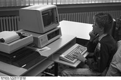
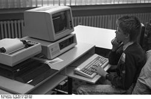

Quarta geração (1972-1980)
A quarta geração é caracterizada por um aperfeiçoamento da tecnologia já existente, proporcionando uma
otimização da máquina para os problemas do usuário, maior grau de miniatuarização, confiabilidade e
velocidade maior, já da ordem de nanosegundos. A partir da década de 1970, os computadores deixaram de
funcionar com circuitos integrados e incorporaram ainda mais os Microprocessadores. Nessa época a
popularização dos disquetes permitiu separar o usuário e programador. Foi possível copiar softwares em
disquetes e distribuí-los, sem a necessidade de realizar uma programação para cada máquina.
Alem disso, além quarta geração de computadores foi caracterizada por incluir dois tipos de memória:
Memória RAM: armazena os dados do programa temporariamente, enquanto o equipamento está ligado
Memória ROM: armazena os dados do programanepermanentemente no chip.
 
